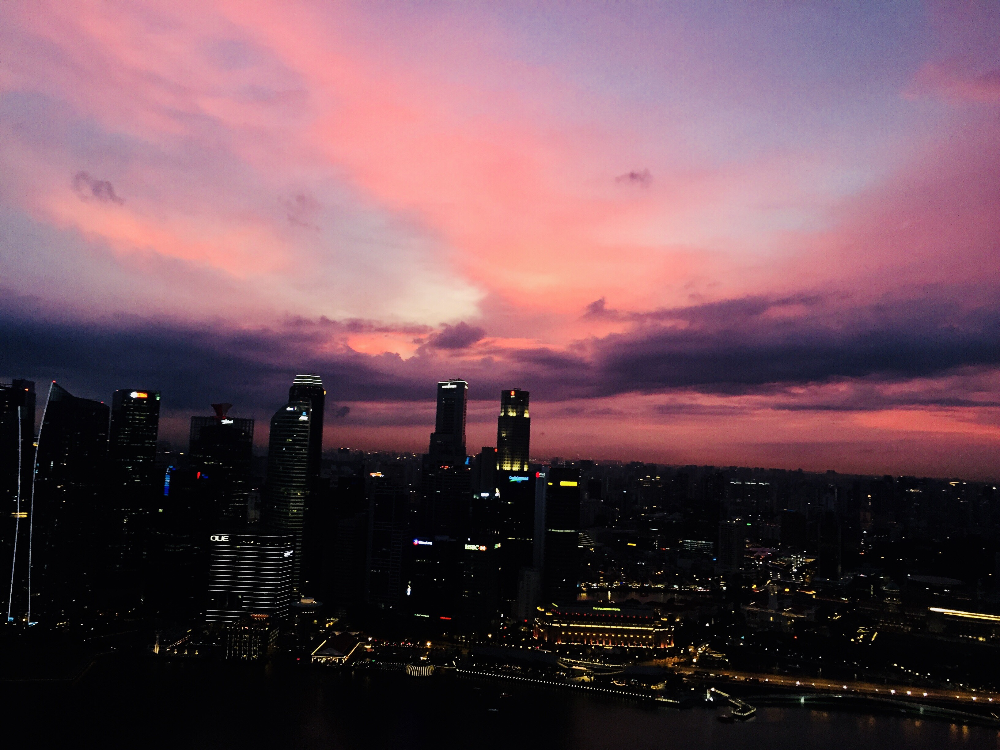
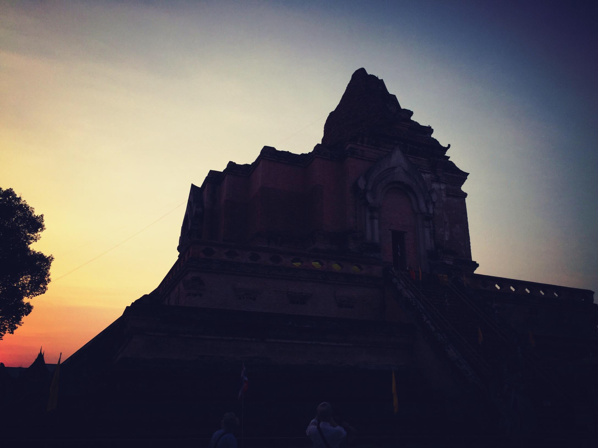

1/3

Singapore
2/3

Chang Mai
3/3

America
I'm a girl like travelling around the world. In the past few years, I have visited many different countries with my friends and my family. In each trip, I can have the chance to experience various kinds of culture, taste many interesting food and, most importantly, meet people with stories.
To record my trips, I enjoy taking photos. Above slides are some beautiful scenes I took at three places. I think our world is full of amazing views and most of them are fleeting moments. By using photos, I can remain these moments and share with more people.
There are still many many places I've not seen, not visited before. I hope in the future, I can still kepp my heart to find the beauty in the world and have the ability to travel around all these places.